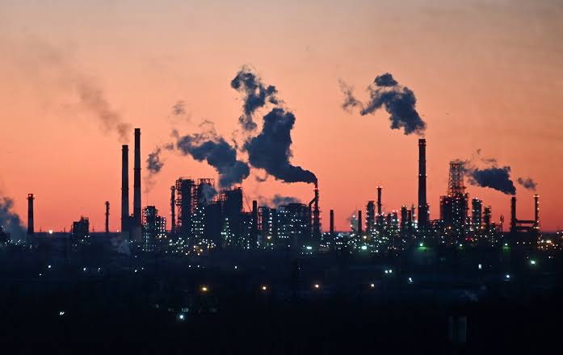

01 / UP · یادداشت Energy Notes
تابآوری اقتصادی از کجا میآید؟
روایتی از پژوهشی دربارهٔ رابطهٔ استقلال انرژی و تابآوری اقتصادی در ۶۸ اقتصاد؛ جایی که کاهش اثر شوکهای جهانی برای واردکنندگان پررنگتر است، اما صادرکنندگان با چرخهٔ قیمت انرژی و هزینهٔ گذار روبهرو میشوند.

یک پالایشگاه، یک اقتصاد و چند شوک بیرونی
پالایشگاهِ تصویر در غروب نارنجی روشن است، اما هیچ تأسیسات انرژیای از جهان بیرون جدا نیست. قیمت نفت تغییر میکند، مسیر تجارت مختل میشود، جنگی عرضه را محدود میکند یا تقاضای جهانی ناگهان پایین میآید. پرسش این است که کدام اقتصادها میتوانند این ضربهها را بهتر جذب کنند.
مقالهٔ «Energy independence and economic resilience» نوشتهٔ Ruiguang Ma، Jiayin Sun، Qiaozhang Hong و Ningxin Qiu، رابطهٔ میان استقلال انرژی و تابآوری اقتصادی را در ۶۸ اقتصاد بررسی میکند. نتیجه، دفاع ساده از «خودکفایی» نیست. استقلال انرژی معمولاً اثر برخی شوکهای جهانی را کم میکند، اما برای واردکنندگان و صادرکنندگان یک معنای یکسان ندارد و حتی میتواند در کنار بعضی مزایا، ریسکهای تازهای بسازد.
استقلال انرژی دقیقاً چه چیزی را میسنجد؟
نویسندگان استقلال انرژی را توان یک اقتصاد برای تأمین تقاضای انرژی از منابع داخلی تعریف میکنند. شاخص اصلی آنها از نسبت خالص صادرات انرژی به انرژی در دسترس ناخالص به دست میآید؛ یعنی صادرات منهای واردات، در مقایسه با کل انرژیای که برای پاسخ به تقاضا در اختیار اقتصاد قرار دارد.
مقدار مثبت نشان میدهد اقتصاد در دورهٔ بررسی صادرکنندهٔ خالص بوده است و مقدار منفی به وابستگی به واردات اشاره میکند. این شاخص با «داشتن ذخیرهٔ زیاد» یکی نیست. یک صادرکننده ممکن است از منابع داخلی برخوردار باشد، اما درآمد و تولیدش همچنان به قیمت جهانی وابسته بماند. از سوی دیگر، واردکنندهای که منابع داخلی کمی دارد، از نوسان قیمت و اختلال عرضه آسیبپذیرتر است، اما ممکن است از تنوع مسیرها یا سیاستهای بهرهوری برای کاهش این آسیب استفاده کند.
برای محاسبهٔ ماهانه، مقاله از دادههای Joint Organization Data Initiative یا JODI استفاده میکند. چون دادهٔ گاز طبیعی در این پایگاه فقط از سال ۲۰۰۹ در دسترس است، نویسندگان نفت خام را بهعنوان نمایندهٔ استقلال انرژی به کار میبرند. بنابراین نباید شاخص مقاله را تصویری کامل از همهٔ حاملهای انرژی یا همهٔ شکلهای امنیت انرژی دانست.
مدل بهجای یک خبر، چند نوع شوک را جدا میکند
نمونهٔ مقاله کشورهایی را در بر میگیرد که دستکم ده سال دادهٔ پیوسته داشتهاند. این ۶۸ اقتصاد در سال ۲۰۲۳ حدود ۹۶ درصد تولید ناخالص داخلی جهان را پوشش میدهند. دورهٔ اصلی داده از ژانویهٔ ۲۰۰۲ تا دسامبر ۲۰۲۳ است. رشد تولید با نرخ رشد سالبهسال تولید صنعتی و تورم با نرخ رشد سالبهسال شاخص قیمت مصرفکننده سنجیده میشود.
روش مقاله برای خوانندهٔ غیرمتخصص هم یک پیام ساده دارد. نویسندگان با مدل فاکتورافزودهٔ خودرگرسیو برداری، یا FAVAR، حرکتهای مشترک میان اقتصادها را از نوسانهای داخلی جدا میکنند. سپس با محدودیتهای علامتی، پنج نوع شوک را از هم تفکیک میکنند: تقاضای جهانی، عرضهٔ جهانی، انرژی، تقاضای داخلی و عرضهٔ داخلی. در این چارچوب، بالا رفتن قیمت نفت که همزمان تورم را بالا میبرد و رشد را پایین میآورد، یک شوک انرژی تلقی میشود؛ اما اثر آن بر هر اقتصاد میتواند متفاوت باشد.
این تفکیک مهم است، چون «تابآوری» فقط به این معنا نیست که اقتصاد در یک سال رشد کرده باشد. سؤال مقاله این است که چه سهمی از نوسان تولید و تورم از بیرون میآید و چه سهمی را عوامل داخلی توضیح میدهند.
واردکنندگان بیشتر از شوک جهانی ضربه میگیرند
مقایسهٔ دو گروه، نخستین تفاوت را نشان میدهد. پس از ۲۴ ماه، شوکهای تقاضای جهانی حدود ۳۱٫۱ درصد از نوسان تولید در اقتصادهای واردکننده را توضیح میدهند؛ این سهم برای صادرکنندگان حدود ۱۹ درصد است. در تورم نیز سهم شوکهای عرضهٔ جهانی برای واردکنندگان به حدود ۵۱٫۴ درصد میرسد، درحالیکه برای صادرکنندگان حدود ۳۳٫۳ درصد است.
این اعداد نمیگویند هر صادرکنندهای همیشه مقاومتر است. آنها فقط نشان میدهند در نمونه و مدل مقاله، اقتصادهای صادرکننده در برابر بعضی شوکهای جهانی نوسان کمتری نشان میدهند. وقتی خودِ شوک انرژی را جدا میکنیم، تصویر پیچیدهتر میشود: در افق ۲۴ماهه، سهم شوک انرژی از نوسان تورم برای صادرکنندگان حدود ۱۱٫۷ درصد و برای واردکنندگان حدود ۷٫۳ درصد است. درآمد و تولید صادرکننده به بازار انرژی نزدیکتر است؛ بنابراین همان مزیتی که وابستگی وارداتی را کم میکند، میتواند حساسیت اقتصاد را به چرخهٔ قیمت انرژی بالا ببرد.
یک واحد استقلال بیشتر، چه چیزی را کم میکند؟
در برآورد پایه، افزایش استقلال انرژی با کاهش سهم شوکهای عرضه و تقاضای جهانی در نوسان اقتصاد همراه است و نقش عوامل داخلی را بیشتر میکند. مقاله برای قابلفهمکردن اندازهٔ این رابطه از یک انحراف معیار افزایش در شاخص استقلال انرژی استفاده میکند.
در این محاسبه، چنین افزایشی سهم شوک تقاضای جهانی از نوسان تولید را معادل ۱۴ درصد میانگین نمونه کاهش میدهد. سهم شوک عرضهٔ جهانی از نوسان تولید ۴٫۶ درصد از میانگین خود کم میشود و سهم شوک عرضهٔ جهانی از نوسان تورم حدود ۲۳٫۲ درصد کاهش مییابد. در مقابل، سهم شوک انرژی از نوسان تولید حدود ۲٫۹ درصد از میانگین خود بیشتر میشود.
این درصدها درصد تغییر تولید ناخالص داخلی نیستند؛ آنها تغییر نسبی در سهم هر شوک از نوسان تولید یا تورماند. همین تفاوت جلوی یک برداشت اغراقآمیز را میگیرد: استقلال انرژی در مدل مقاله سپر اقتصاد در برابر برخی ضربههاست، نه تضمین رشد یا حذف نوسان.
عربستان، مالزی و ژاپن یک درس مشترک ندارند
نویسندگان برای دیدن سازوکارها سه مورد را جداگانه بررسی میکنند: عربستان سعودی، مالزی و ژاپن. عربستان نمونهٔ صادرکنندهای با منابع داخلی فراوان و قدرت بیشتر در بازار نفت است؛ ژاپن واردکنندهای است که به بازارهای جهانی انرژی وابستگی بالایی دارد؛ و مالزی در این مقایسه صادرکنندهای با ساختار متفاوت و اتکای قابلتوجه به تجارت مجدد معرفی میشود.
در دورهٔ رکود جهانی سال ۲۰۲۰، شوکهای جهانی ۶۳٫۷ درصد از افت تولید ژاپن را توضیح میدهند، درحالیکه این سهم برای عربستان ۱۹٫۹ درصد است. در زمان جنگ روسیه و اوکراین نیز سهم شوک انرژی از نوسان تولید ژاپن ۲۹٫۷ درصد و برای عربستان ۴٫۷ درصد گزارش میشود.
اما مقایسهٔ عربستان و مالزی نشان میدهد «صادرکنندهبودن» بهتنهایی کافی نیست. در زمان جنگ روسیه و اوکراین، شوکهای جهانی بیش از نیمی از نوسانهای اقتصاد کلان مالزی را توضیح میدهند؛ این سهم برای عربستان حدود یکچهارم است. سهم شوک انرژی از نوسان تولید مالزی ۱۸٫۷ درصد و برای عربستان ۴٫۷ درصد گزارش شده است. تفسیر مقاله این است که ساختار صادرات مجدد مالزی، اقتصاد را همزمان در معرض شوکهای عرضه و تقاضای جهانی قرار میدهد؛ درحالیکه عربستان با قدرت قیمتگذاری و امکان تنظیم عرضه، بخشی از این فشار را جذب میکند.
تنوع انرژی، یک راهحل بدون هزینه نیست
تنوعدادن به سبد انرژی از نظر نظری باید امکان جایگزینی ایجاد کند. اگر یک منبع یا مسیر مختل شود، منابع دیگر میتوانند بخشی از تقاضا را پوشش دهند. اما تنوع ممکن است هزینهٔ هماهنگی، استانداردسازی و مقیاس را هم بالا ببرد.
در اقتصادهای واردکننده، مقاله هر دو طرف این معامله را میبیند. تنوع، توان مقاومت در برابر شوکهای جهانی را بیشتر میکند، اما در برابر شوکهای انرژی میتواند بخشی از اثر کاهندهٔ استقلال انرژی را تضعیف کند و ناامنیهای تازهای به وجود آورد. برای اقتصادهای صادرکننده، منفعت جایگزینی معمولاً کوچکتر است، چون عرضهٔ داخلی از قبل بخش بزرگی از تقاضا را پوشش میدهد؛ درنتیجه، از دستدادن بخشی از صرفههای مقیاس میتواند اثر تنوع را خنثی کند.
این بخش با بحث گذار انرژی و جابهجایی نقشهٔ قدرت هم پیوند دارد. تغییر سبد انرژی فقط انتخاب یک سوخت بهجای سوخت دیگر نیست؛ به فناوری، شبکه، سرمایه و توان مدیریت وابسته است. سبد متنوعتر زمانی مزیت میشود که نهادها و زیرساخت لازم برای ادارهٔ آن نیز وجود داشته باشد.
گذار سبز برای واردکننده و صادرکننده یک مسیر نیست
نویسندگان سهم انرژیهای تجدیدپذیر در مصرف نهایی انرژی را نمایندهٔ سرعت گذار سبز میگیرند. برای صادرکنندگان، نتایج با این انتظار سازگار است که گذار سبز میتواند نقش استقلال انرژی را تقویت کند: در مدل مقاله، گذار سریعتر انتقال شوکهای جهانی و انرژی به تولید و قیمتها را کاهش میدهد.
برای واردکنندگان، اثرها دوگانهاند. گذار سبز نوسان تورم ناشی از شوکهای جهانی و انرژی را کم میکند، اما در همین مدل اثر شوک انرژی بر تولید را افزایش میدهد. یکی از برداشتهای مقاله این است که ادغام سریع در بازارهای جهانی انرژی سبز میتواند وابستگیهای تازهای به فناوری، تجهیزات، مواد اولیه یا مسیرهای وارداتی بسازد. بنابراین پاکترشدن سبد انرژی، بهخودیخود به معنی حذف همهٔ ریسکهای امنیت انرژی نیست.
بهرهوری، دفاعی است که به ذخیرهٔ نفت نیاز ندارد
کاهش شدت انرژی، یعنی مصرف انرژی کمتر بهازای هر واحد تولید، از نظر مقاله کانالی عمومیتر است. این مسیر برخلاف سپر عرضهٔ داخلی، به داشتن میدان نفتی یا گازی بزرگ وابسته نیست. اگر تولید با انرژی کمتری انجام شود، تغییر قیمت جهانی انرژی با شدت کمتری به هزینه و تورم داخلی منتقل میشود.
در نتایج، بهرهوری انرژی برای صادرکنندگان دامنهٔ اثر گستردهتری دارد: هم اثر شوکهای جهانی بر تورم را کم میکند و هم مقاومت در برابر شوکهای انرژی را تقویت میکند. برای واردکنندگان، اثر اصلیتر در کاهش نوسان تورم ناشی از شوکهای جهانی دیده میشود. این نتیجه به بحث رابطهٔ مصرف انرژی و رشد اقتصادی نزدیک است: مقدار انرژی مهم است، اما ساختار مصرف و بهرهوری هم تعیین میکند که تغییر انرژی چگونه به اقتصاد منتقل شود.
وقتی سه آزمون دیگر همان داستان را تکرار میکنند
مقاله برای سنجش استحکام نتیجهها فقط به یک تعریف از استقلال انرژی تکیه نمیکند. نویسندگان سه شاخص جایگزین را نیز به کار میبرند: شاخص خودکفایی، نسبت تولید به مصرف و خالص واردات انرژی. دادهٔ این شاخصها سالانه است، اما نتیجهٔ کلی با برآورد پایه سازگار میماند.
سپس بررسی میکنند که آیا نتیجه فقط محصول یک بحران خاص است یا نه. بحران مالی جهانی، همهگیری کووید-۱۹ و جنگ روسیه و اوکراین بهصورت جداگانه وارد تحلیل میشوند. اندازهٔ اثرها در این دورهها تغییر میکند، اما نقش کاهندهٔ استقلال انرژی در برآوردهای مقاله باقی میماند.
این آزمونها به معنی بینقصبودن مدل نیستند. نتیجهها بیشتر رابطههای میانگین را در بازهٔ ۲۰۰۲ تا ۲۰۲۳ نشان میدهند و ممکن است رفتار غیرخطی یا زمانمتغیر اقتصادها در روزهای شدیدترین بحران را کامل ثبت نکنند.
استقلال انرژی، پایان وابستگی نیست
پیام مقاله را میتوان اینطور خلاصه کرد: استقلال انرژی ظرفیت اقتصاد برای جذب بعضی شوکهای بیرونی را بالا میبرد، اما شکل این ظرفیت به جایگاه کشور در بازار انرژی بستگی دارد. واردکننده از کاهش وابستگی و امکان جایگزینی سود میبرد، ولی ممکن است با ناامنیهای جدید روبهرو شود. صادرکننده از عرضهٔ داخلی و قدرت بازار بهره میگیرد، اما در برابر چرخهٔ قیمت انرژی و خطر وابستگی به یک مزیت منابعی آسیبپذیر میماند.
پس سیاست انرژی نباید فقط یک هدف عددی برای تولید داخلی تعیین کند. تنوع، گذار سبز و بهرهوری باید کنار ساختار تجارت، توان فناوری، شبکهٔ زیرساخت و موقعیت کشور در بازار خوانده شوند. برای صادرکننده، سؤال اصلی فقط این نیست که چگونه بیشتر تولید کند؛ باید پرسید چگونه بدون از دستدادن مزیت فعلی، وابستگی اقتصاد را به چرخهٔ نفت کمتر و آن را تابآورتر کند. برای واردکننده نیز مسئله فقط جایگزینکردن یک سوخت نیست؛ باید دید جایگزین جدید چه زنجیرهای از فناوری و وابستگی را وارد میکند.
خود نویسندگان نیز محدودیتها را روشن میکنند. مقاله عمدتاً تابآوری اقتصاد کلان را میسنجد، نه فقر انرژی، پایداری محیطزیستی یا راهبرد سازگاری خانوارها و بنگاهها. بنابراین این پژوهش یک نقشهٔ تصمیم است، نه نسخهٔ نهایی برای همهٔ کشورها. ارزش آن در این است که نشان میدهد «استقلال انرژی» یک نتیجهٔ واحد ندارد و هر سیاست باید اثرش را در چند مسیر همزمان بسنجد.
منابع این روایت
- Energy independence and economic resilience Energy Policy / Elsevier · paper